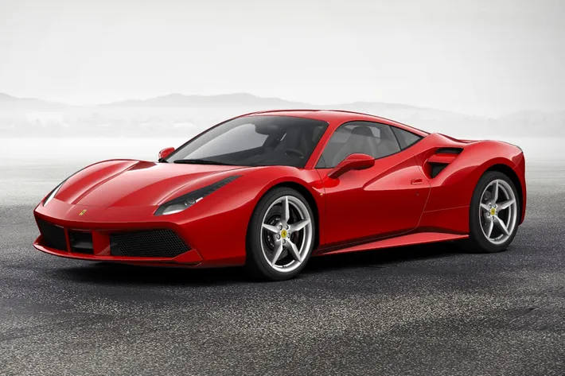
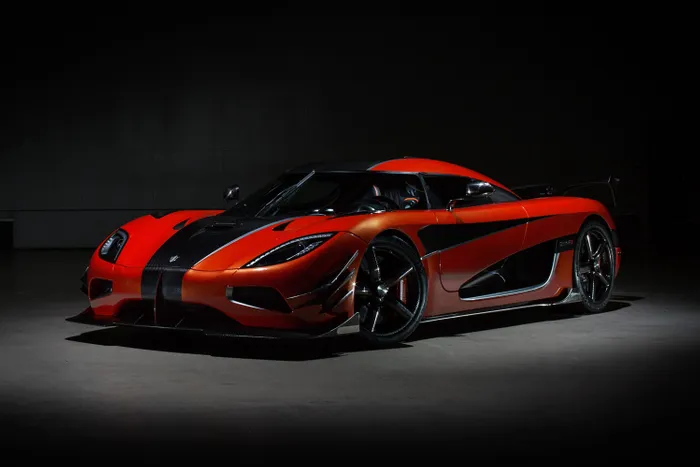

The Ferrari
Take the Corvette Z06 and the Ferrari 488 GTB. Both are ridiculously fast, capable of hauling to 60 in three seconds or less. Both are ridiculously powerful, each with around 650 horsepower and nearly equal pound-feet of torque. Both are ridiculously well-styled, able to turn plenty of heads as they scream past. A drag race between the pair would yield very even results, yet only one is a supercar: the 488. The Ferrari costs more than $260,000 and, while the company is tight-lipped about production numbers, not many have been made. Chevy’s Z06 is a bargain at $93,000, and nearly 9,000 units were produced last year. It’s too cheap and too available.
